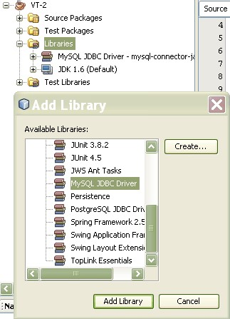

Netbeans, Java, MySQL: Örnek Veritabanı Uygulaması – 1

Bu makalede Netbeans, Java ve MySQL ile basit bir veritabanı uygulaması gerçekleştireceğiz. Uygulama basitçe bir tabloya kayıt ekleme, silme ve tablodan kayıt getirme işlemleri yapacak. Bunları yaparken Java Swing paketini kullanarak basit bir görsel arayüz de kullanacağız.
Öncelikle sistemimizde NetBeans + JDK ve MySQL kurulu olması gerekiyor. Daha sonra NetBeans ile MySQL bağlantısını yapmamız ve uygulamada kullanacağımız örnek veritabanının oluşturmamız gerekiyor. İşin bu kısmını görünlütü olarak anlatmak daha kolay olacağından aşağıdaki videoyu hazırladım. Videoyu izledikten sonra devamında kodlar ve açıklamalar var. Yazının sonunda ise kaynak kodların tamamını indirebilirsiniz.
Not: Videoyu izlemekte problem yaşıyorsanız, buradan indirebilirsiniz.
Örnek veritabanı için gerekli kodlar aşağıdaki gibidir: Veritabanını oluşturmak için:
CREATE DATABASE IF NOT EXISTS vt;
USE vt;Kisiler Tablosunu oluşturmak için:
DROP TABLE IF EXISTS `kisiler`;
CREATE TABLE `kisiler` (
`id` int(10) unsigned NOT NULL AUTO_INCREMENT,
`Ad` varchar(45) NOT NULL,
`Soyad` varchar(45) NOT NULL,
`Yas` int(10) unsigned NOT NULL,
`Cinsiyet` tinyint(3) unsigned NOT NULL,
PRIMARY KEY (`id`)
) ENGINE=InnoDB AUTO_INCREMENT=6 DEFAULT CHARSET=utf8;Kisiler Tablosuna örnek kayıtları eklemek için:
INSERT INTO `kisiler` (`id`,`Ad`,`Soyad`,`Yas`,`Cinsiyet`) VALUES
(1,'Harun Reşit','Zafer',27,1),
(2,'Derya','Deniz',24,0),
(3,'Emir','Aydın',33,1),
(4,'Levent','Denizeri',25,1),
(5,'Abbas','Yolcu',25,1);Veritabanına Bağlantı
private Connection conn = null; //Bağlantı nesnemiz
private String url = "jdbc:mysql://localhost:3306/"; //veritabanının adresi ve portu
private String dbName = "vt"; //veritabanının ismi
private String properties= "?useUnicode=true&characterEncoding=utf8"; //Türkçe karakter problemi yaşamamak için
private String driver = "com.mysql.jdbc.Driver"; //MySQL-Java bağlantısını sağlayan JDBC sürücüsü
private String userName = "root"; //veritabanı için kullanıcı adı
private String password = ""; //kullanıcı şifresi
private ResultSet res; // sorgulardan dönecek kayıtlar (sonuç kümesi) bu nesne içerisinde tutulacakYukarıdaki kodda driver isimli değişken önemli. Bu sürücüyü projemize eklememiz gerekiyor. Bunun için resimde gördüğünüz “Libraries” düğümünün üzerine sağ tıklayıp “add library” deyip, açılan pencereden MySQL JDBC Driver’ı seçin ve “Add Library” butonuna tıklayın.

Bu sürücüyü projemize dahil etmeden, programımızın çalışmayacağını hatırlatalım. Aşağıdaki fonksiyonlar bağlantı açmak ve kapamak için kullanılıyor. Dikkat ederseniz yukarıdaki değerleri aşağıda kullanıyoruz.
public Statement baglantiAc() throws Exception {
Class.forName(driver).newInstance();
conn = DriverManager.getConnection(url + dbName + properties, userName, password); //bağlantı açılıyor
return conn.createStatement(ResultSet.TYPE_SCROLL_INSENSITIVE, ResultSet.CONCUR_UPDATABLE);
//return conn.createStatement(ResultSet.TYPE_SCROLL_INSENSITIVE,ResultSet.CONCUR_READ_ONLY);
}Yukarıda ResultSet.CONCUR_UPDATABLE yerine ResultSet.CONCUR_READ_ONLY yazarsak veritabanı salt okunur olarak açılır. Bu durumda kayıtları okuyabiliriz ama kayıt ekle/sil/güncelle işlemlerini yapamayız.
public void baglantiKapat() throws Exception {
conn.close();
}Yukarıdaki fonksiyon da bağlantıyı kapatıyor.
Kayıtların Tablodan Alınması
st = baglantiAc(); //veritabanına bağlanılıyor
res = st.executeQuery("SELECT * FROM kisiler"); //tablodaki kayıtlar getiriliyorYukarıdaki sorgunun sonuç kümesi (bu sorgu için tablonun tamamı) res isimli ResultSet nesnesine aktarılıyor. Bu işlem bir kere programın başında yapılıyor. Programın geri kalanında hep res isimli ResultSet nesnemizi kullanarak veritabanı işlemlerini gerçekleştireceğiz.
Kayıtların Metin Kutularına Yazılması
res.next(); //tablonun ilk kaydını göster.
adTextField.setText(res.getString("Ad"));
soyadTextField.setText(res.getString("Soyad"));
yasTextField.setText(res.getString("Yas"));
if(res.getInt("Cinsiyet")==1){
cinsiyetComboBox.setSelectedIndex(0);
}
else{
cinsiyetComboBox.setSelectedIndex(1);
}Kayıtlar Arasında Gezinme
res.next() komutu ilk defa kullanıldığında res nesnesinin barındırdığı tablonun ilk kaydına (satırına) gelinir. Daha sonra her res.next() komutu ile bir sonraki kayıda gidilir. ResultSet nesnesinin ilgili diğer metodları aşağıdaki gibidir:
res.previous(); // bir önceki kayıta git
res.first(); //ilk kayıta git
res.last(); //son kayıta git
res.absolute(3); //3. kayıta git.Kayıt Ekleme
res.moveToInsertRow(); //Kaydın ekleneceği yeni satıra git
res.updateString("Ad", adTextField.getText()); //"Ad" alanına metin kutusuna girilen değeri ekle
res.updateString("Soyad", soyadTextField.getText()); //"Soyad" alanına " " "
res.updateInt("yas", Integer.parseInt(yasTextField.getText())); //"yas" alanına " " "
boolean cns;
if (cinsiyetComboBox.getSelectedIndex()==0){
cns=true;
}
else
{
cns=false;
}
res.updateBoolean("cinsiyet",cns); //cinsiyet alanına 1 veya 0 değeri ekleniyor
res.insertRow(); //Kaydı (satırı) tabloya ekleKayıt Güncelleme
Kayıt eklemeye çok benzediğinden bir daha burada eklemedim. Kodları indirdiğinizde görebilirsiniz.
Kayıt Silme
res.deleteRow();Görüldüğü gibi oldukça basit. O an üzerinde bulunulan kaydı (satırı) siliyor.
Programın Genel Akış Mantığı
Programın koduna dikkat ederseniz veritabanı bağlantısının program başlarken baglantiAc() ile 1 kere yapıldığını, program sonlanana kadar açık kaldığını ve program kapanırken, bağlantının da baglantiKapat() ile kapatıldığını göreceksiniz. Bir diğer göze çarpan husus ise ekle/güncelle/sil gibi komutlar için bildiğimiz INSERT/UPDATE/DELETE gibi SQL komutlarının kodda yer almaması. Bu kodlar geri planda çalıştırılıyor.
Peki neden bağlantıyı yalnızca bir defa açıp kapamak için iki metod yazdık? Bunun cevabını bir sonraki örnekte anlayacağız. O örnekte SQL komutlarını bizzat kendimiz yazıp kullanırken, her veritabanı işlemi için bağlantıyı açıp işlem bittikten hemen sonra bağlantıyı kapatacağız.
Peki ama hangi yaklaşım daha iyi?
Elbette ikinci örneği de görüp anlamadan bu soruya cevap aramak anlamsız. Kodların tamamını NetBeans projesi olarak buradan indirebilirsiniz.
Not: Yaklaşık 1,5 yıl sonra kodda bir hata (Türkçe karakter problemi) farkettim ve yukarıdaki koda “properties” adında bir string daha ekledim. Bu değişikliği kodların bulunduğu proje dosyasında yapmadım. Bunu da ödev olarak size bırakıyorum 🙂.
Herkese kolay gelsin
İlgili Yazılar
- Netbeans, Java, MySQL: Örnek Veritabanı Uygulaması – 2
- Netbeans, Java, MySQL: Örnek Veritabanı Uygulaması – 3
- Java ve SQLite: Örnek Veritabanı Uygulaması – 4
24 Ocak 2010 Pazar tarihinde yayınlandı.